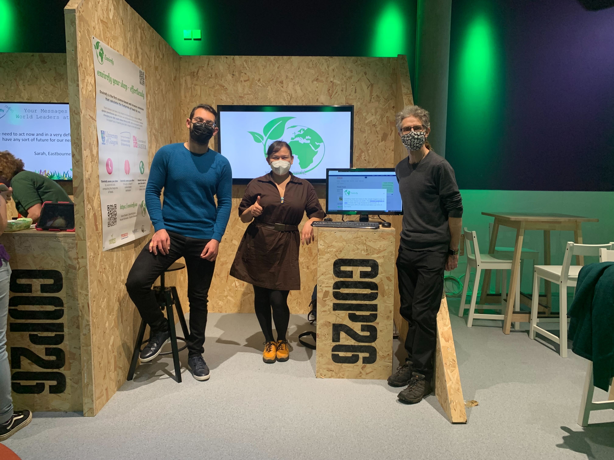
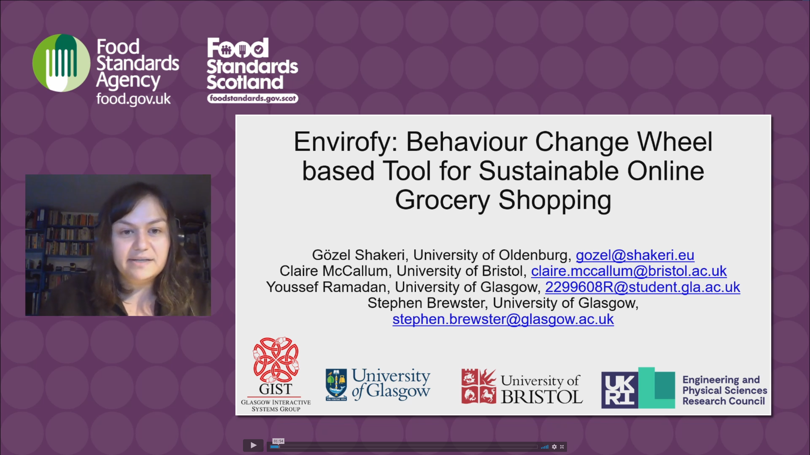
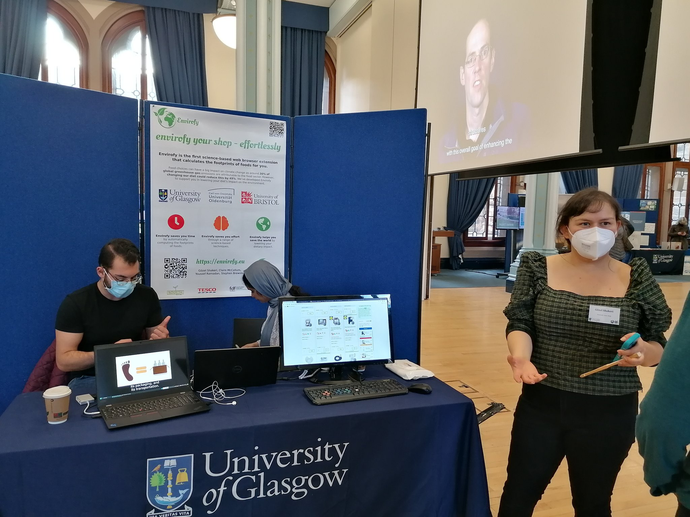

Events
-
2021Nov
Envirofy at COP26
We presented our work at the Green Zone during COP26! It was a brilliant blur of a day.
-
2021Nov
Envirofy & the Global Conference for Food Safety Regulation and Sustainability
We presented our work at the Global Conference for Food Safety Regulation and Sustainability! You can view the entire panel session here (register as attendee). Disclaimer: ‘This presentation represents the opinions of the presenter(s) and does not represent the position or the opinion of the Food Standards Agency or Food Standards Scotland.’
-
2021Nov
Envirofy & the University of Glasgow (COP26)
Got some more exposure at the Univeristy of Glasgow's Sustainable Solutions Showcase.
-
2021Oct
Envirofy at COP26 - with Nourish Scotland
Envirofy will be at the Nourish Recipes for Resilience pavilion on November 6th. Get the tickets here.
-
2021Oct
Fix Envirofy
Due to updates on Waitrose's web interface, we are re-integrating Envirofy, so the user experience remains as before.
-
2021Sep
Gözel started her new job at the Carl Ossietzky University Oldenburg
Gözel started her new position as post-doctoral research associate at HCI Oldenburg. She will now dedicate herself fully to the investigation of Behaviour Change Techniques at the point of purchase, when online shopping.
-
2021Sep
UN Game Changers Lab: presentation of action agendas at the Food Systems Summit
The members of Cohort 21 at the UN Game Changers Lab 2021 presented their work at the Action Agenda Assemblies, UN Food Systems Summit. All the best of luck to the brilliant, dedicated, passionate, and hard working members of Cohort 21. And fingers crossed they will find investors!
-
2021Aug
Not successful in securing more funding
We were not successful at securing the GKE funding.
-
2021Jun
The pursuit of happiness ... i.e. monies?
We applied for funds from the GKE call. If we are successful, we will keep Youssef for a few more months.
-
2021Jun
Not successful at securing funds from the EPSRC IAA account. :-(
We were not successful at securing funds from the EPSRC IAA call. Just like every other research team on this planet, we really hoped to get the opportunity to expand our team and do some more amazing research. However, in this process we learned how to improve our funding proposal skills, thus we're confident in securing money - eventually!
-
2021Jun
We got into the UN Food Systems Summit Game Changers Lab!
Within our cohort "building food literacy through education" we will develop an Action Agenda to achieve the Sustainable Development Goals by 2030.
-
2021Jun
Second study will launch soon!
The long awaited second study will launch soon.
-
2021May
INTERACT 2021
We got another paper accepted at the INTERACT 2021 Workshop on Human-centred Technology for Sustainable Development Goals: Challenges and Opportunities.
-
2021May
UN Food Systems Summit Game Changers Lab
We applied to the UN Food Summit Game Changers Lab. Please support us by following and liking Envirofy.
For older posts, see here.